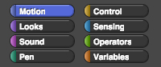
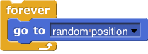
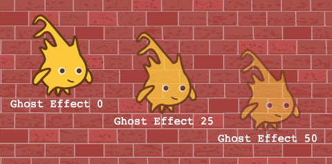

Click Alonzo Game
Alonzo is a quick, slippery sprite. Can you click fast enough to capture him?
-
Click here to load a starter project.

-
Make Alonzo jump someplace else on the stage when he's clicked. Drag these two blocks into the scripting area (the center area of the window):


To find a block, look for the matching color palette in the top left.
 -
Test your program. Click on the Alonzo sprite several times. If your program works, Alonzo should move to a random position on the stage each time you click him.
-
Once you've clicked him, you want him to keep jumping around on his own. Attach this to the bottom of your program:

-
Whoa! Alonzo moves too fast. Click to stop your program. Slow him down by using . Where should you put it? Do you want a longer or slower wait time?
-
Program Alonzo to face the other way when clicked, using
-
Test your program. Make sure Alonzo faces the other way when he is clicked, but not when he jumps without being clicked.
-
Let's make Alonzo more invisible with every click. The player wins when Alonzo disappears completely. Drag into the center scripting area, and experiment with different input numbers. Click it repeatedly after each change to see what happens. At what ghost effect value does Alonzo become completely invisible?
To make Alonzo fully visible again, use
-
Modify your program so that every time Alonzo is clicked, he gets a little more ghostly. Try out your game. How does the input you use affect the length of the game?
-
The game will be more interesting if the player is penalized for missing a click. Figure out where to add another , inputting a negative number (try -5), to make Alonzo get less transparent if he moves without being clicked.
-
When Alonzo is completely transparent, the game should stop. Add this code to the right place in your program to end the game.

-
Play your game a few times. Adjust your code to get a level of difficulty that you like. What should you change to make it harder? Easier?
-
Click the red stop sign at the top right.
-
Create a second script to make Alonzo say a welcome message when at the top right is clicked. Use the blocks:
A script is a bunch of blocks snapped together.
A program is all of your scripts, sprites, and stage(s) working together. -
Go back to your first script. Make the welcome message disappear when the player clicks on Alonzo, by using with nothing inside.
-
Check that your app does everything you want:
- When the green flag is clicked, Alonzo should welcome the player.
- When Alonzo is clicked, the message should disappear, and Alonzo should move to a random spot on the stage, face the other way, and get more transparent.
- Alonzo should start to reappear (but shouldn't face the other way) any time he moves without being clicked.
Congratulations, you have created the game "Click Alonzo!"
Credits
Content adapted directly from: BJC U1L1 "Click Alonzo Game".